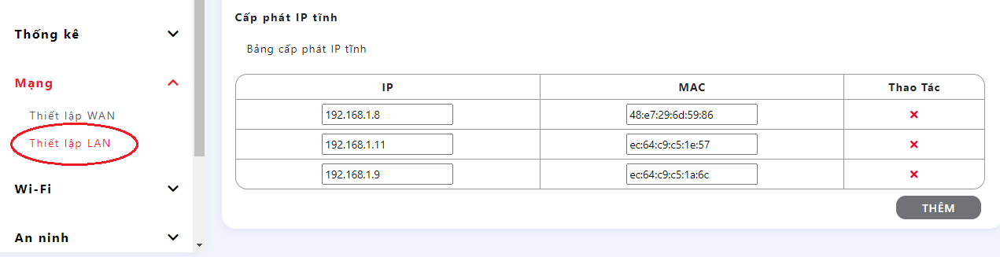

Công Tơ Điện Thông Minh - Zalo 0971282336
- Công tơ điện thông minh là hệ thống thiết bị đo công suất tiêu thụ điện của gia đình bạn và công suất của biến tần hòa lưới trực tiếp (Micro Inverter), nhằm tính toàn công suất dư thừa và triệt tiêu chúng nếu có. Để đảm bảo không có lượng điện dư nào bị đẩy ngược ra công tơ của EVN.
- Bạn có thể dùng điện thoại để theo dõi các chỉ số từ xa thông qua dịch vụ miễn phí của google sheet.
- Đây là dự án miễn phí, giúp mọi người tiếp cận với năng lượng mặt trời theo hướng rẻ và hiệu quả nhất.
Các bạn truy cập kênh youtube của mình để xem nhiều video hơn nhé: https://youtube.com/@vuongnguyenhp234
Video chạy thực tế khả năng đốt công suất dư thừa.
Video chạy giả lập khả năng đốt công suất dư thừa.
Chuẩn Bị Phần Cứng
- Link mua mạch điều khiển (mua 3 mạch): https://shopee.vn/MạchĐiềuKhiển- Link mua Pzem 004T (mua 2 mạch): https://shopee.vn/Pzem004tV3.0
- Link mua mạch đốt công suất dư thừa: https://shopee.vn/MạchĐốtCôngSuấtDưthừa
- Link mua Micro Inver (600w hoặc 1200w) shop tặng kèm quạt tản nhiệt 12v và giắc mc4.https://shopee.vn/MicroInverter
- Nếu bạn đang dùng Micro Inverter có công suất > 250w, hãy mua thêm 1 con Triac BTA41-600 để thay cho triac BT138 có sẵn ở mạch đốt 👆
- Mỏ hàn thiếc hoặc ra quán điện thoại nhờ hàn hộ theo các sơ đồ dưới:


Nạp Phần Mềm Cho Thiết Bị
- Driver cho máy tính, tải về tại đây.
- Phần mềm cho mạch Công Tơ Tổng - tải về tại đây.
- Phần mềm cho mạch Hoà Lưới - tải về tại đây.
- Phần mềm cho mạch Đốt Công Suất dư thừa (lựa chọn công suất đốt = công suất của Micro Inverter) - tải về: 200w, 400w, 600w, 800w, 1000w, 1200w, 1800w, 2400w, 3000w
- ESP8266Flasher cho Windows x86 (32 bit), tải về tại đây.
- ESP8266Flasher cho Windows x64 (64 bit), tải về tại đây.


Hướng dẫn lấy địa chỉ IP nội bộ cho 3 mạch wifi điều khiển
- Bạn cấp nguồn cho mạch Công Tơ Tổng rồi kết nối với wifi CongToTong do thiết bị phát ra.- Bạn mở trình duyệt web rồi truy cập 1.2.3.4
- Bạn ghi nhớ địa chỉ MAC của thiết bị được hiển thị trên màn hình, sau đó chọn mạng wifi nhà bạn, nhập chính xác mật khẩu và bấm "Kết Nối". Khi thiết bị kết nối thành công với wifi nhà bạn, thì wifi CongToTong sẽ biến mất.
- Lúc này bạn dùng điện thoại android vào CHplay cài ứng dụng Network Analyzer để xem địa chỉ IP nội bộ của mạch Công Tơ Tổng (bằng cách so sánh địa chỉ MAC đã lấy được ở bước trên), và thêm địa chỉ IP đó vào IP tĩnh trong modem wifi nhà bạn. (ghi nhớ địa chỉ nội bộ ra giấy nháp để dùng ở bước dưới)


- Với mạch Hòa Lưới và mạch Điều Khiển Đốt bạn cũng làm tương tự như cách làm ở trên để lấy được IP nội bộ và ghi nó ra giấy.
- Thêm các địa chỉ IP đó vào IP tĩnh trong modem wifi nhà bạn. (LAN setting)

Lệnh Cài Đặt Thiết Bị
Các lệnh này chỉ dùng được khi đã lấy được IP nội bộ của 3 mạch điều khiển.Bạn dùng trình duyệt web, truy cập vào địa chỉ IP nội bộ của mạch Công Tơ Tổng. Ví dụ là 192.168.1.11
- Với lần sử dụng đầu tiên, bạn cần nhập lệnh: chaylandau (để cấu hình tự động các chỉ số theo mặc định)
- Thay đổi IP nội bộ của mạch Hòa Lưới
. IP nội bộ của mạch Hòa Lưới đã lấy được ở bước trên.
. Ví dụ IP của mạch Hòa Lưới là 192.168.1.23 bạn nhập: iphoaluoi192.168.1.23
- Thay đổi IP nội bộ của mạch Điều Khiển Đốt
. IP nội bộ của mạch Điều Khiển Đốt đã lấy được ở bước trên.
. Ví dụ IP của mạch Điều Khiển Đốt là 192.168.1.24 bạn nhập: ipmachdot192.168.1.24
- Thay đổi ngày chốt số
. Thiết bị sẽ chốt số điện hàng tháng vào 24h00 của ngày mà bạn cài đặt.
. Ví dụ khu vực bạn sống chốt số vào ngày 20, bạn nhập: ngaychotso20
Hướng dẫn đồng bộ dữ liệu lên Google Sheet
- Mỗi một bảng tính google sheet sẽ có một ID riêng biệt, hoặc khi bạn thay đổi App Script thì ID này cũng sẽ thay đổi.- Link tạo ID bảng tính của google Sheet https://docs.google.com/spreadsheets/create
- Link quản lý các bảng tính Google Sheet đã tạo https://docs.google.com/spreadsheets/u/0/
- Copy toàn bộ nội dung trong file ==> App Script.txt và LinkCheck.txt
- Khi đã có được ID google sheet, truy cập vào IP nội bộ của mạch Công Tơ Tổng rồi nhập: idmoichuỗiIDcủabạn
Ví dụ chuỗi mới là AKfycbxiL7rmnBRa0txRGtxwQeX2b12nb6g0hM9u
Thì bạn nhập idmoiAKfycbxiL7rmnBRa0txRGtxwQeX2b12nb6g0hM9u
- Bạn muốn thay đổi thành 10s, nhập lệnh truyendulieu10
- Cứ sau 10 giây thiết bị sẽ truyền dữ liệu một lần.